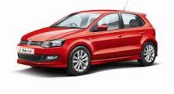
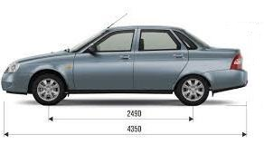
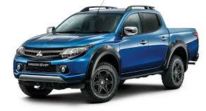
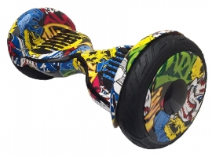
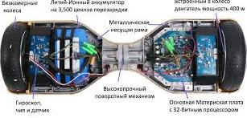
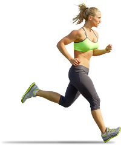
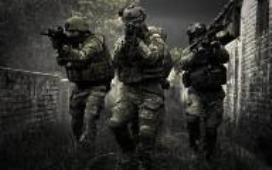
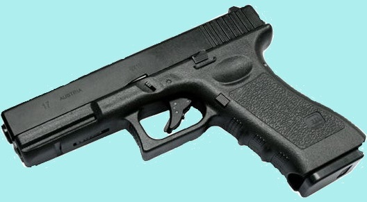
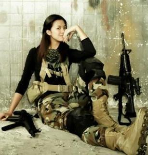
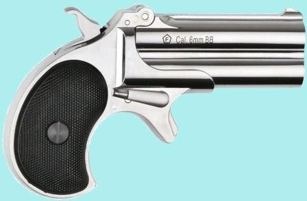

Переход на главную страницу
рубрика отдых и спорт
Выбор семейного автомобиля||Гироскутер –подарок для ребёнка||О беге||Страйкбол
назад к списку
Выбор семейного автомобиля
Категории семейных авто
При выборе автомобиля для своей семьи важно, чтобы желания совпалдали с возможностями. Для того, чтобы облегчить выбор поделим автомобили на четыре категории.

1.Городские малыши- автомобили сегмента «А» и «В» длиной 3,5 – 4,2 метра. Их проще припарковать, они расходуют гораздо меньше топлива. Несмотря на компактные размеры внутри них достаточно просторно. Такой эффект достигается за счёт уменьшения диаметра колёс и дорожного просвета При выездпе за город по удобству он уступает другим нашим атегориям, но на нём вполне можно добраться до большинства туристических баз. Основной тип кузова у этих «малышей» - хэтчбэк. Объём багажника 250-300 л., что вполне достаточно для семьи из трёх человек. К тому же и такого малыша можно оборудовать фаркопом для прицепа с дополнительным объёмом багажа.
ПОПУЛЯРНЫЕ МОДЕЛИ: Chevrolet Aveo, Citroen C1, Citroen C3, Ford Fiesta, WV Polo, Hyundai Solaris, Kia Rio, ВАЗ 1111 «Ока».

2.Семейные легковушки- автомобили С –компактный и D – средний (размеры 4,3 – 4,7 м). Самый распространённый тип кузова хэтчбэк, хотя встречаются седаны и универсалы. Плюсы здесь : объём багажника побольше (350 – 500 литров); в этом сегменте очень много автомобилей повышенной проходимости (Shkoda yeti, Renault sandero stapway, Lada Kalina Cross ), что дает возможность добраться до более отдаленных и менее благоустроенных туристических баз; мощность двигателя позволяет побыстрее двигаться по холмистой предгорной местности.
ПОПУЛЯРНЫЕ МОДЕЛИ: Ford Focus; Peugeot 308, Hyundai Elantra, Shkoda Oktavia, Lada Priora.

3.SUV (спортивно-унитарные) - Сегмент автомобилей классаJ очень популярен на отечественных просторах. Главные отличительные особенности – кузов «уневерсал» и увеличенный до 25 и выше сантиметров дорожный просвет Размеры в этом классе сильно варьируются: от длины кузова 4,3-4,5 м у компактных моделей вроде RAV-4 ( в Корее и Японии даже встречаются мини-SUV длиной менее 4х метров ) до гигантов наподобие MERSEDES BENZ GL c тремя рядами сидений и 7ю посадочными местами. Все модели SUV имеют модификации с полным приводом. Обычным делом являются и рейлинги на крыше, позволяющие крепить дополнительный багаж. Штатный багажник у машин данного класса вместителен: 700-2300 литров Даже компания из пяти человек может упаковать в кроссовер
все что ей понадобится на неделю путешествия.
ПОПУЛЯРНЫЕ МОДЕЛИ: Honda CR-V, Kia Sportage, Toyota RAV-4

4.Пикапы
Жила-была большая-пребольшая семья: папа, мама и целых восемь детей… И ещё с ними жил небольшой грузовик, который они все очень любили. Так начинается серия популярных детских рассказов Анны-Катрине Вестли. В настоящее время и в нашей стране стало реальностью приобрести грузовичок-пикап. Конечо это не совсем грузовик, но уже и не легковой автомобиль. Длина кузова от 5 до 7,5 метров, усиленная рама и открытая грузовая платформа, позволяющая перевозить громоздкий багаж.
Долгое время этот класс автомобилей считался чисто утилитарным. Но с появлением в 1983 году пикапа Toyota Hilux SR4 (мечта Мартина Мак Флая из к/ф Назад в Будущее ) этот класс устойчиво набирает популярность среди любителей активного отдыха. Грузоподъемность такой машины от 1000 до 2500 кг. Загрузив кузов важно не забыть закрепить груз ремнями и тросами, чтобы не вылетел на резком повороте, и накрыть нпромокаемой тканью. Даже компактные версии пикапов сейчас оборудуются 4-х дверной кабиной с двумя рядами сидений. Очень много моделей выпускается в полноприводном варианте. Багажа поместится на 10-15 суток полноценного отдыха.
.
ПОПУЛЯРНЫЕ МОДЕЛИ: Mitsubishi L200, Toyota Hilux, Ssang Yong Actyon Sports? УАЗ Picup,Nissan Navara, Ford F-150.
назад к списку
Гироскутер –подарок для ребёнка

Такая продвинутая
вещь как гироскутер мало какого взрослого оставит равнодушным. А о детях и говорить нечего. Это наверное самый желанный подарок для детей от 7-8 до 16-18 лет. Вот почему вопрос, как выбрать гироскутер для ребенка и не ошибиться в покупке, волнует всё большее число родителей.
Гироскутер (также ховерборд от hoverboard, ховерскутер от hoverscooter, двухколесный скутер, самобалансирующийся скутер англ. self-balancing two-wheeled board) — личное электрическое транспортное средство, выполненное в форме поперечной планки с двумя колёсами по бокам. Использует электродвигатели, питаемые от электроаккумулятора, и ряд гироскопических датчиков для самобалансировки и поддержания горизонтального положения площадки для ног.
Правильный выбор такого подарка зависит от многих факторов: финансовые возможности, возраст ребёнка, дорожное покрытие и т.д.
Первое на что надо обратить внимание – прочность конструкции и диаметр колёс
Самые маленькие 4,5-дюймовые колёса(11,5 см). Устройства с такими колёсами без амортизации, поэтому кататься придётся исключительно на гладких поверхностях. Скорость небольшая – 5-7 км/ч.
Гироскутеры побольше имеют 6,5-дюймовые колёса(16,5 см). -самые распространённые. Эти гироскутеры также подойдут для начинающих .Скорость – до 10 км/ч. Есть небольшие амортизаторы.
Средние с 8-дюймовыми колёсами(20,3 см). На таких можно рискнуть ездить по небольшому бездорожью
. Скорость не выше 10 км/ч.
Самые большие 10-дюймовые колёса. Ну здесь всё выше: амортизация, проходимость, скорость. На таком приспособлении можно выехать и за пределы парковых дорожек. Скорость гигантов
– до 15 км/ч.
Все модели оснащены двумя электрическими двигателями. За счёт их мощности устройство способно будет преодолевать различные препятствия: бордюры, неровность поверхностей. Чем выше мощность тем проходимее и дороже гироскутер. Самые маленькие скутеры с небольшой мощностью 500 ватт (2х250). Подросткам оптимальнее будет купить более мощные транспортные средства – 700 ватт (2х350).
Гироскутеры работают от литий-ионных батарей, которые отличаются лёгкостью, и хорошей энергоёмкостью. Но, как и большинство аккумуляторов, они боятся холода.
Если покупаете бывший в употреблении гироскутер, необходимо погонять его хотя бы минут двадцать. Это нужно для того, чтобы проверить , в первую очередь, состояние аккумулятора.

Управление гироскутером обеспечивают три материнских платы: одна контролирует управление всего устройства, остальные две – каждая на своё колесо. Встречаются гироскутеры и с двумя платами. Но их покупать не стоит, т.к. они чаще глючат.
Изготовителей плат для скутера много, но в лучшую сторону выделяется «ТаоТао». Именно её электроника устанавливаются в самые качественные изделия. Так же внимание стоит уделить материалу корпуса. Но тут долго распространяться не стоит, т.к. качество материала легко определить визуально.
Популярные модели: Airwheel, Hoverbot, Novelty Electronics, Smart Balance.
назад к списку
О беге

Бег в общем-то, очень полезная штука. Мало того что бег - один из максимально-эффективных способов сжигания калорий, но это(как заметил знаменитый писатель Харуки Мураками) ещё и один из самых дешевых видов спорта. Действительно, для бега не нужно никаких приспособлений, дорогостоящих конструкций. Можно, конечно, купить беговую дорожку, но я считаю (и моё мнение не единственное)– это лишняя трата денег. Ни одна беговая дорожка не заменит тех ощущений которые вы получите при утренней пробежке. И не важно где она проходит . Знаю на своём опыте, что утром самый безликий и самый серый спальный район обычного российского города имеет свою привлекательность.
Ещё в беге главное не тропиться. Не надо побивать рекорд олимпийской сборной при первой же пробежке. Если хочется бежать побыстрей – беги побыстрей. Главное сохранить до следующей пробежки весь ряд приятных ощущений, которые испытываешь.
А вообще бег – это не только тренировка для ног, но и профилактика(и даже лечение) нервных срывов и заболеваний.
Именно поэтому потратив приблизительно одну тысячу рублей (примерно столько стоит пара более менее нормальных кроссовок) вы можете сохранить бесценное здоровье – своё и своих близких.
назад к списку
Страйкбол
Страйкбо́л (от англ. strike — удар, ball — шар) — некоммерческая, командная, военно-спортивная игра, в которой применяются точные копии боевого оружия. Игра основана на честности, ведь попадание пластиковыми шариками не оставляет никаких следов. Игра идёт по заранее оговоренному сценарию, который добавляет реалистичности действиям. Экипировка каждой команды полностью соответствует эпохе или стране. Здесь можно воспроизвести схватку ковбоев на диком западе, эпизод из Великой Отечественной войны или просто полицейскую перестрелку.

Данная игра имеет возрастные ограничения и подойдет для пап, мам и детей достигших 18 летнего возраста. Но наблюдать за игрой, возрастных ограничений не требуется. Многие дети полюбят этот вид спорта, который не только увлекателен сам по себе, но и может привить любовь к такому предмету, как история.
Для своих боевых действий страйкболисты выбирают труднопроходимые леса, заброшенные военные городки, бывшие полигоны, стройки.
В Россию страйкбол пришел в 1997 году, а его родиной является Япония. Страйкбольные клубы организованы во многих городах : С-петербург, Москва, Мурманск, Пермь, Ростов-на-Дону и т. д.
Российский аналог командной игры, более известной как эйрсофт (англ. Airsoft) с использованием так называемой «мягкой пневматики» (разрешенная дульная энергия в России не более 3 Дж), использующей пластиковые шарики калибром 6 мм (изредка 8 мм), не содержащие цветных пигментов (что отличает данную игру отпейнтбола). Основной тип оружия — ЭПО (электропневматическое оружие), в обиходе называемое «приводом». Также существуют модели оружия на сжатом газе. В основном в игре участвуют две или более команд. Страйкбольные игры отличает более растянутый по времени сюжет на большой площади, ограниченный лишь фантазией и желанием (отсюда ответвления в виде сталкерстрайка и ролевых игр с использованием страйкбольного оружия), высокая степень копийности (вплоть до полного соответствия) существующим военным формированиям разных стран, отсутствие индивидуального и командного рейтинга (ввиду отсутствия судей, подсчëта баллов). Игра ведëтся на честность. В разных странах существуют свои ограничения к эйрсофт оружию и свои правила.

Страйкбольная версия пистолета Глок 17,надёжного друга американских полицейских.
Существуют несколько типов игр, отличающихся целями, местом проведения, задействованной экипировкой, требованиями к участникам и так далее. Самые распространенные и популярные типы игр — «Колбаса», CQCS , MilSim и ARW.
Колбаса
Или «колбасные войны», обиходное название относительно коротких игр на небольшой площади независимо от типа территории. Без преувеличения колбаса это начало начал эйрсофта в России. Именно динамичные игры практически на любой местности, по своей сути представляющие воплощение компьютерных игр в реальности, послужили (не без заслуг китайских производителей эйрсофт оружия) толчком для вовлечения, распространения и дальнейшего качественного роста и популяризации страйкбола.
CQCS
CQCS (Close Quarters Combat Simulation) или CQB (Close Quarters Battle) — симуляция боёв в помещениях с комнатами не больше квартирных комнат. Бой такого типа отличается жесткостью, внезапностью, слаженностью команд.
Некоторые особенности:
- Форма одежды обязательно должна соответствовать обыгрываемому периоду и подразделению;
- Использование магазинов только типа «механический» (50-120 шаров в одном);
- Разрешено использование рукопашного боя в оговоренных правилами пределах.
Military simulation
MilSim или «military simulation» — предполагает подражание действиям настоящих солдат (устав, марши, караулы, дозоры) и т. п.
Некоторые особенности :
- Форма одежды обязательно должна соответствовать обыгрываемому периоду и подразделению;
- Использование магазинов только типа «механический» (50-120 шаров в одном);
- Магазины типа «бункерный» (400—2000 и даже 4000 шаров) могут использовать только пулеметчики;
- Иногда довольно тяжело для новичков из-за большей продолжительности, чем в других играх.
- Основное отличие от других игр, это одна жизнь на всю игру
ARW

ARW или «airsoft real war» — проходит без ограничений по времени, без оживлений, с «ранеными» и при ограниченном «боекомплекте». Правила требуют наличия в магазине такого количества «патронов», какое предусмотрено в боевом прототипе (если в боевом АК-74 30 патронов, можно использовать в «механическом» магазине на 100 шаров только 30). Игроки умирают только один раз за игру.
Правила смешиваются в любых пропорциях. На больших официальных играх (Открытие и Закрытие) играют по правилам устраивающей игру организации, а на всех по договоренности между командами, к обычным правилам добавляют ранения и ограничивают боезапас (вплоть до карточек, разрываемых у патронного ящика перед перезарядкой). Патронные ящики введены и на БОИ — нельзя дозаряжаться, а ящики игроки таскают между контрольными точками. Также неофициальные игры могут отличаться неординарным (по страйкбольным меркам) сюжетом, требовать от игроков решения непривычных задач, иметь больше интересных «пакетных» заданий и даже включать ролевые элементы.
Официальные игры
Большие игры — это прежде всего ежегодные Открытие и Закрытие страйкбольного сезона, а также некоторые тематические игры. На такие игры приезжают игроки из многих городов, а иногда и из-за рубежа. Общее количество играющих может достигать нескольких тысяч человек. Для создания антуража на большие игры может привлекаться техника: грузовики, боевые машины, БТРы, водный транспорт, танки, авиация. Открытие и закрытие по версии Ассоциации страйкбола самой АС трактуются как фестиваль страйкбола.
Приватные игры

Страйкбольная версия пистолета Дерринжер,хорошего партнера за карточным столом
Приватные игры организуются для проведения игр с усиленными требованиями по антуражу либо практической проверки планируемых нововведений в правила. Присутствовать на них могут только приглашённые команды или игроки. На подобных играх могут вводиться некоторые ограничения, не предусмотренные общими Правилами страйкбола, или сниматься некоторые предусмотренные.